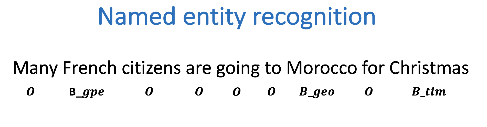
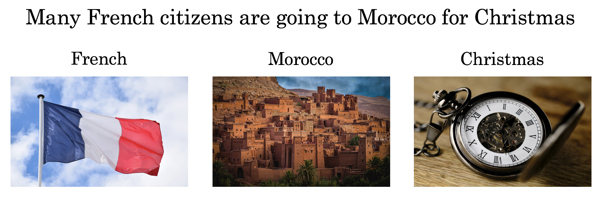
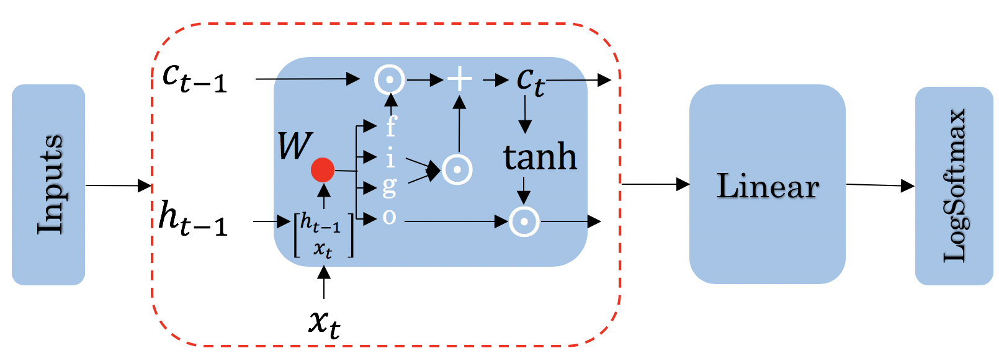

Due to the Coursera Honor Code, I cannot provide the solutions to the assignments.
This notebook is the original notebook provided by the course
It is setup to run without stopping for errors.
It is also likely to be out of date as the course has had some updates since I took it.
Although I aced the course this assignment was the most time consuming.
Good luck with the assignment it should make we a better programmer.
It is also a good idea to go over it a few times until we can do it easily.
Welcome to the third programming assignment of Course 3. In this assignment, you will learn to build more complicated models with Trax. By completing this assignment, you will be able to:
Design the architecture of a neural network, train it, and test it.
We first start by defining named entity recognition (NER). NER is a subtask of information extraction that locates and classifies named entities in a text. The named entities could be organizations, persons, locations, times, etc.
For example:

Is labeled as follows:
French: geopolitical entity
Morocco: geographic entity
Christmas: time indicator
Everything else that is labeled with an O is not considered to be a named entity. In this assignment, you will train a named entity recognition system that could be trained in a few seconds (on a GPU) and will get around 75% accuracy. Then, you will load in the exact version of your model, which was trained for a longer period of time. You could then evaluate the trained version of your model to get 96% accuracy! Finally, you will be able to test your named entity recognition system with your own sentence.
#!pip -q install trax==1.3.1import trax from trax import layers as tlimport os import numpy as npimport pandas as pdfrom utils import get_params, get_vocabimport random as rnd# set random seeds to make this notebook easier to replicatetrax.supervised.trainer_lib.init_random_number_generators(33)
2025-02-06 00:23:04.882331: E external/local_xla/xla/stream_executor/cuda/cuda_fft.cc:477] Unable to register cuFFT factory: Attempting to register factory for plugin cuFFT when one has already been registered
WARNING: All log messages before absl::InitializeLog() is called are written to STDERR
E0000 00:00:1738794184.902184 684316 cuda_dnn.cc:8310] Unable to register cuDNN factory: Attempting to register factory for plugin cuDNN when one has already been registered
E0000 00:00:1738794184.908343 684316 cuda_blas.cc:1418] Unable to register cuBLAS factory: Attempting to register factory for plugin cuBLAS when one has already been registered
---------------------------------------------------------------------------AttributeError Traceback (most recent call last)
Cell In[1], line 14 11importrandomasrnd 13# set random seeds to make this notebook easier to replicate---> 14trax.supervised.trainer_lib.init_random_number_generators(33)
AttributeError: module 'trax.supervised.trainer_lib' has no attribute 'init_random_number_generators'
# Part 1: Exploring the data
We will be using a dataset from Kaggle, which we will preprocess for you. The original data consists of four columns, the sentence number, the word, the part of speech of the word, and the tags. A few tags you might expect to see are:
vocab is a dictionary that translates a word string to a unique number. Given a sentence, you can represent it as an array of numbers translating with this dictionary. The dictionary contains a <PAD> token.
When training an LSTM using batches, all your input sentences must be the same size. To accomplish this, you set the length of your sentences to a certain number and add the generic <PAD> token to fill all the empty spaces.
# vocab translates from a word to a unique numberprint('vocab["the"]:', vocab["the"])# Pad tokenprint('padded token:', vocab['<PAD>'])
vocab["the"]: 9
padded token: 35180
The tag_map corresponds to one of the possible tags a word can have. Run the cell below to see the possible classes you will be predicting. The prepositions in the tags mean: * I: Token is inside an entity. * B: Token begins an entity.
So the coding scheme that tags the entities is a minimal one where B- indicates the first token in a multi-token entity, and I- indicates one in the middle of a multi-token entity. If you had the sentence
“Sharon flew to Miami on Friday”
the outputs would look like:
Sharon B-per
flew O
to O
Miami B-geo
on O
Friday B-tim
your tags would reflect three tokens beginning with B-, since there are no multi-token entities in the sequence. But if you added Sharon’s last name to the sentence:
“Sharon Floyd flew to Miami on Friday”
Sharon B-per
Floyd I-per
flew O
to O
Miami B-geo
on O
Friday B-tim
then your tags would change to show first “Sharon” as B-per, and “Floyd” as I-per, where I- indicates an inner token in a multi-token sequence.
# Exploring information about the dataprint('The number of outputs is tag_map', len(tag_map))# The number of vocabulary tokens (including <PAD>)g_vocab_size =len(vocab)print(f"Num of vocabulary words: {g_vocab_size}")print('The vocab size is', len(vocab))print('The training size is', t_size)print('The validation size is', v_size)print('An example of the first sentence is', t_sentences[0])print('An example of its corresponding label is', t_labels[0])
The number of outputs is tag_map 17
Num of vocabulary words: 35181
The vocab size is 35181
The training size is 33570
The validation size is 7194
An example of the first sentence is [0, 1, 2, 3, 4, 5, 6, 7, 8, 9, 10, 11, 12, 13, 14, 9, 15, 1, 16, 17, 18, 19, 20, 21]
An example of its corresponding label is [0, 0, 0, 0, 0, 0, 1, 0, 0, 0, 0, 0, 1, 0, 0, 0, 0, 0, 2, 0, 0, 0, 0, 0]
So you can see that we have already encoded each sentence into a tensor by converting it into a number. We also have 16 possible classes, as shown in the tag map.
1.2 Data generator
In python, a generator is a function that behaves like an iterator. It will return the next item. Here is a link to review python generators.
In many AI applications it is very useful to have a data generator. You will now implement a data generator for our NER application.
Exercise 01
Instructions: Implement a data generator function that takes in batch_size, x, y, pad, shuffle where x is a large list of sentences, and y is a list of the tags associated with those sentences and pad is a pad value. Return a subset of those inputs in a tuple of two arrays (X,Y). Each is an array of dimension (batch_size, max_len), where max_len is the length of the longest sentence in that batch. You will pad the X and Y examples with the pad argument. If shuffle=True, the data will be traversed in a random form.
Details:
This code as an outer loop
while True:
...
yield((X,Y))
Which runs continuously in the fashion of generators, pausing when yielding the next values. We will generate a batch_size output on each pass of this loop.
It has two inner loops. 1. The first stores in temporal lists the data samples to be included in the next batch, and finds the maximum length of the sentences contained in it. By adjusting the length to include only the size of the longest sentence in each batch, overall computation is reduced.
The second loop moves those inputs from the temporal list into NumPy arrays pre-filled with pad values.
There are three slightly out of the ordinary features. 1. The first is the use of the NumPy full function to fill the NumPy arrays with a pad value. See full function documentation.
The second is tracking the current location in the incoming lists of sentences. Generators variables hold their values between invocations, so we create an index variable, initialize to zero, and increment by one for each sample included in a batch. However, we do not use the index to access the positions of the list of sentences directly. Instead, we use it to select one index from a list of indexes. In this way, we can change the order in which we traverse our original list, keeping untouched our original list.
The third also relates to wrapping. Because batch_size and the length of the input lists are not aligned, gathering a batch_size group of inputs may involve wrapping back to the beginning of the input loop. In our approach, it is just enough to reset the index to 0. We can re-shuffle the list of indexes to produce different batches each time.
# UNQ_C1 (UNIQUE CELL IDENTIFIER, DO NOT EDIT)# GRADED FUNCTION: data_generatordef data_generator(batch_size, x, y, pad, shuffle=False, verbose=False):''' Input: batch_size - integer describing the batch size x - list containing sentences where words are represented as integers y - list containing tags associated with the sentences shuffle - Shuffle the data order pad - an integer representing a pad character verbose - Print information during runtime Output: a tuple containing 2 elements: X - np.ndarray of dim (batch_size, max_len) of padded sentences Y - np.ndarray of dim (batch_size, max_len) of tags associated with the sentences in X '''# count the number of lines in data_lines num_lines =len(x)# create an array with the indexes of data_lines that can be shuffled lines_index = [*range(num_lines)]# shuffle the indexes if shuffle is set to Trueif shuffle: rnd.shuffle(lines_index) index =0# tracks current location in x, ywhileTrue: buffer_x = [0] * batch_size # Temporal array to store the raw x data for this batch buffer_y = [0] * batch_size # Temporal array to store the raw y data for this batch### START CODE HERE (Replace instances of 'None' with your code) #### Copy into the temporal buffers the sentences in x[index : index + batch_size] # along with their corresponding labels y[index : index + batch_size]# Find maximum length of sentences in x[index : index + batch_size] for this batch. # Reset the index if we reach the end of the data set, and shuffle the indexes if needed. max_len =0for i inrange(batch_size):# if the index is greater than or equal to the number of lines in xif index >= num_lines:# then reset the index to 0 index =None# re-shuffle the indexes if shuffle is set to Trueif shuffle: rnd.shuffle(None)# The current position is obtained using `lines_index[index]`# Store the x value at the current position into the buffer_x buffer_x[i] =None# Store the y value at the current position into the buffer_y buffer_y[i] =None lenx =None#length of current x[]if lenx > max_len: max_len =None#max_len tracks longest x[]# increment index by one index +=None# create X,Y, NumPy arrays of size (batch_size, max_len) 'full' of pad value X =None Y =None# copy values from lists to NumPy arrays. Use the buffered valuesfor i inrange(batch_size):# get the example (sentence as a tensor)# in `buffer_x` at the `i` index x_i =None# similarly, get the example's labels# in `buffer_y` at the `i` index y_i =None# Walk through each word in x_ifor j inrange(len(x_i)):# store the word in x_i at position j into X X[i, j] =None# store the label in y_i at position j into Y Y[i, j] =None### END CODE HERE ###if verbose: print("index=", index)yield((X,Y))
You will now implement the model. You will be using Google’s TensorFlow. Your model will be able to distinguish the following:

The model architecture will be as follows:

Concretely:
Use the input tensors you built in your data generator
Feed it into an Embedding layer, to produce more semantic entries
Feed it into an LSTM layer
Run the output through a linear layer
Run the result through a log softmax layer to get the predicted class for each word.
Good news! We won’t make you implement the LSTM unit drawn above. However, we will ask you to build the model.
### Exercise 02
Instructions: Implement the initialization step and the forward function of your Named Entity Recognition system.
Please utilize help function e.g. help(tl.Dense) for more information on a layer
tl.Serial: Combinator that applies layers serially (by function composition).
You can pass in the layers as arguments to Serial, separated by commas.
For example: tl.Serial(tl.Embeddings(...), tl.Mean(...), tl.Dense(...), tl.LogSoftmax(...))
tl.Embedding: Initializes the embedding. In this case it is the dimension of the model by the size of the vocabulary.
tl.Embedding(vocab_size, d_feature).
vocab_size is the number of unique words in the given vocabulary.
d_feature is the number of elements in the word embedding (some choices for a word embedding size range from 150 to 300, for example).
# UNQ_C2 (UNIQUE CELL IDENTIFIER, DO NOT EDIT)# GRADED FUNCTION: NERdef NER(vocab_size=35181, d_model=50, tags=tag_map):''' Input: vocab_size - integer containing the size of the vocabulary d_model - integer describing the embedding size Output: model - a trax serial model '''### START CODE HERE (Replace instances of 'None' with your code) ### model = tl.Serial(None, # Embedding layerNone, # LSTM layerNone, # Dense layer with len(tags) unitsNone# LogSoftmax layer )### END CODE HERE ###return model
# initializing your modelmodel = NER()# display your modelprint(model)
/home/oren/work/notes/notes-nlp/.venv/lib/python3.10/site-packages/trax/layers/combinators.py:437: SyntaxWarning: "is not" with a literal. Did you mean "!="?
if self._mode == 'predict' and self._state[1] is not (): # pylint: disable=literal-comparison
/home/oren/work/notes/notes-nlp/.venv/lib/python3.10/site-packages/trax/layers/combinators.py:910: SyntaxWarning: "is" with a literal. Did you mean "=="?
if state[0] is (): # pylint: disable=literal-comparison
/home/oren/work/notes/notes-nlp/.venv/lib/python3.10/site-packages/trax/layers/combinators.py:437: SyntaxWarning: "is not" with a literal. Did you mean "!="?
if self._mode == 'predict' and self._state[1] is not (): # pylint: disable=literal-comparison
/home/oren/work/notes/notes-nlp/.venv/lib/python3.10/site-packages/trax/layers/combinators.py:910: SyntaxWarning: "is" with a literal. Did you mean "=="?
if state[0] is (): # pylint: disable=literal-comparison
---------------------------------------------------------------------------ValueError Traceback (most recent call last)
Cell In[10], line 2 1# initializing your model----> 2 model =NER() 3# display your model 4print(model)
Cell In[9], line 12, in NER(vocab_size, d_model, tags) 4''' 5 Input: 6 vocab_size - integer containing the size of the vocabulary (...) 9 model - a trax serial model 10''' 11### START CODE HERE (Replace instances of 'None' with your code) ###---> 12 model =tl.Serial( 13None,# Embedding layer 14None,# LSTM layer 15None,# Dense layer with len(tags) units 16None# LogSoftmax layer 17) 18### END CODE HERE ### 19return model
File ~/work/notes/notes-nlp/.venv/lib/python3.10/site-packages/trax/layers/combinators.py:59, in Serial.__init__(self, name, sublayers_to_print, *sublayers) 55def__init__(self, *sublayers, name=None, sublayers_to_print=None):
56super().__init__(
57 name=name, sublayers_to_print=sublayers_to_print)
---> 59 sublayers =_ensure_flat(sublayers) 60self._sublayers = sublayers
61self._n_layers =len(sublayers)
File ~/work/notes/notes-nlp/.venv/lib/python3.10/site-packages/trax/layers/combinators.py:1110, in _ensure_flat(layers) 1108for obj in layers:
1109ifnotisinstance(obj, base.Layer):
-> 1110raiseValueError(
1111f'Found nonlayer object ({obj}) in layers: {layers}')
1112return layers
ValueError: Found nonlayer object (None) in layers: [None, None, None, None]
Before you start, you need to create the data generators for training and validation data. It is important that you mask padding in the loss weights of your data, which can be done using the id_to_mask argument of trax.supervised.inputs.add_loss_weights.
from trax.supervised import trainingrnd.seed(33)batch_size =64# Create training data, mask pad id=35180 for training.train_generator = trax.supervised.inputs.add_loss_weights( data_generator(batch_size, t_sentences, t_labels, vocab['<PAD>'], True), id_to_mask=vocab['<PAD>'])# Create validation data, mask pad id=35180 for training.eval_generator = trax.supervised.inputs.add_loss_weights( data_generator(batch_size, v_sentences, v_labels, vocab['<PAD>'], True), id_to_mask=vocab['<PAD>'])
---------------------------------------------------------------------------AttributeError Traceback (most recent call last)
Cell In[11], line 8 5 batch_size =64 7# Create training data, mask pad id=35180 for training.----> 8 train_generator =trax.supervised.inputs.add_loss_weights(
9 data_generator(batch_size, t_sentences, t_labels, vocab['<PAD>'], True),
10 id_to_mask=vocab['<PAD>'])
12# Create validation data, mask pad id=35180 for training. 13 eval_generator = trax.supervised.inputs.add_loss_weights(
14 data_generator(batch_size, v_sentences, v_labels, vocab['<PAD>'], True),
15 id_to_mask=vocab['<PAD>'])
AttributeError: module 'trax.supervised' has no attribute 'inputs'
3.1 Training the model
You will now write a function that takes in your model and trains it.
As you’ve seen in the previous assignments, you will first create the TrainTask and EvalTask using your data generator. Then you will use the training.Loop to train your model.
Exercise 03
Instructions: Implement the train_model program below to train the neural network above. Here is a list of things you should do: - Create the trainer object by calling trax.supervised.training.Loop and pass in the following:
- model = [NER](#ex02)
- [training task](https://trax-ml.readthedocs.io/en/latest/trax.supervised.html#trax.supervised.training.TrainTask) that uses the train data generator defined in the cell above
- loss_layer = [tl.CrossEntropyLoss()](https://github.com/google/trax/blob/22765bb18608d376d8cd660f9865760e4ff489cd/trax/layers/metrics.py#L71)
- optimizer = [trax.optimizers.Adam(0.01)](https://github.com/google/trax/blob/03cb32995e83fc1455b0c8d1c81a14e894d0b7e3/trax/optimizers/adam.py#L23)
- [evaluation task](https://trax-ml.readthedocs.io/en/latest/trax.supervised.html#trax.supervised.training.EvalTask) that uses the validation data generator defined in the cell above
- metrics for `EvalTask`: `tl.CrossEntropyLoss()` and `tl.Accuracy()`
- in `EvalTask` set `n_eval_batches=10` for better evaluation accuracy
- output_dir = output_dir
You’ll be using a cross entropy loss, with an Adam optimizer. Please read the trax documentation to get a full understanding. The trax GitHub also contains some useful information and a link to a colab notebook.
# UNQ_C3 (UNIQUE CELL IDENTIFIER, DO NOT EDIT)# GRADED FUNCTION: train_modeldef train_model(NER, train_generator, eval_generator, train_steps=1, output_dir='model'):''' Input: NER - the model you are building train_generator - The data generator for training examples eval_generator - The data generator for validation examples, train_steps - number of training steps output_dir - folder to save your model Output: training_loop - a trax supervised training Loop '''### START CODE HERE (Replace instances of 'None' with your code) ### train_task = training.TrainTask(None, # A train data generator loss_layer =None, # A cross-entropy loss function optimizer =None, # The adam optimizer ) eval_task = training.EvalTask( labeled_data =None, # A labeled data generator metrics = [None, None], # Evaluate with cross-entropy loss and accuracy n_eval_batches =None# Number of batches to use on each evaluation ) training_loop = training.Loop(None, # A model to trainNone, # A train task eval_task =None, # The evaluation task output_dir =None) # The output directory# Train with train_steps training_loop.run(n_steps =None)### END CODE HERE ###return training_loop
On your local machine, you can run this training for 1000 train_steps and get your own model. This training takes about 5 to 10 minutes to run.
train_steps =100# In coursera we can only train 100 steps!rm -f 'model/model.pkl.gz'# Remove old model.pkl if it exists# Train the modeltraining_loop = train_model(NER(), train_generator, eval_generator, train_steps)
---------------------------------------------------------------------------ValueError Traceback (most recent call last)
Cell In[13], line 5 2 get_ipython().system("rm -f 'model/model.pkl.gz' # Remove old model.pkl if it exists")
4# Train the model----> 5 training_loop = train_model(NER(), train_generator, eval_generator, train_steps)
Cell In[9], line 12, in NER(vocab_size, d_model, tags) 4''' 5 Input: 6 vocab_size - integer containing the size of the vocabulary (...) 9 model - a trax serial model 10''' 11### START CODE HERE (Replace instances of 'None' with your code) ###---> 12 model =tl.Serial( 13None,# Embedding layer 14None,# LSTM layer 15None,# Dense layer with len(tags) units 16None# LogSoftmax layer 17) 18### END CODE HERE ### 19return model
File ~/work/notes/notes-nlp/.venv/lib/python3.10/site-packages/trax/layers/combinators.py:59, in Serial.__init__(self, name, sublayers_to_print, *sublayers) 55def__init__(self, *sublayers, name=None, sublayers_to_print=None):
56super().__init__(
57 name=name, sublayers_to_print=sublayers_to_print)
---> 59 sublayers =_ensure_flat(sublayers) 60self._sublayers = sublayers
61self._n_layers =len(sublayers)
File ~/work/notes/notes-nlp/.venv/lib/python3.10/site-packages/trax/layers/combinators.py:1110, in _ensure_flat(layers) 1108for obj in layers:
1109ifnotisinstance(obj, base.Layer):
-> 1110raiseValueError(
1111f'Found nonlayer object ({obj}) in layers: {layers}')
1112return layers
ValueError: Found nonlayer object (None) in layers: [None, None, None, None]
This value may change between executions, but it must be around 90% of accuracy on train and validations sets, after 100 training steps.
We have trained the model longer, and we give you such a trained model. In that way, we ensure you can continue with the rest of the assignment even if you had some troubles up to here, and also we are sure that everybody will get the same outputs for the last example. However, you are free to try your model, as well.
# loading in a pretrained model..model = NER()model.init(trax.shapes.ShapeDtype((1, 1), dtype=np.int32))# Load the pretrained modelmodel.init_from_file('model.pkl.gz', weights_only=True)
---------------------------------------------------------------------------ValueError Traceback (most recent call last)
Cell In[14], line 2 1# loading in a pretrained model..----> 2 model =NER() 3 model.init(trax.shapes.ShapeDtype((1, 1), dtype=np.int32))
5# Load the pretrained model
Cell In[9], line 12, in NER(vocab_size, d_model, tags) 4''' 5 Input: 6 vocab_size - integer containing the size of the vocabulary (...) 9 model - a trax serial model 10''' 11### START CODE HERE (Replace instances of 'None' with your code) ###---> 12 model =tl.Serial( 13None,# Embedding layer 14None,# LSTM layer 15None,# Dense layer with len(tags) units 16None# LogSoftmax layer 17) 18### END CODE HERE ### 19return model
File ~/work/notes/notes-nlp/.venv/lib/python3.10/site-packages/trax/layers/combinators.py:59, in Serial.__init__(self, name, sublayers_to_print, *sublayers) 55def__init__(self, *sublayers, name=None, sublayers_to_print=None):
56super().__init__(
57 name=name, sublayers_to_print=sublayers_to_print)
---> 59 sublayers =_ensure_flat(sublayers) 60self._sublayers = sublayers
61self._n_layers =len(sublayers)
File ~/work/notes/notes-nlp/.venv/lib/python3.10/site-packages/trax/layers/combinators.py:1110, in _ensure_flat(layers) 1108for obj in layers:
1109ifnotisinstance(obj, base.Layer):
-> 1110raiseValueError(
1111f'Found nonlayer object ({obj}) in layers: {layers}')
1112return layers
ValueError: Found nonlayer object (None) in layers: [None, None, None, None]
Part 4: Compute Accuracy
You will now evaluate in the test set. Previously, you have seen the accuracy on the training set and the validation (noted as eval) set. You will now evaluate on your test set. To get a good evaluation, you will need to create a mask to avoid counting the padding tokens when computing the accuracy.
Exercise 04
Instructions: Write a program that takes in your model and uses it to evaluate on the test set. You should be able to get an accuracy of 95%.
More Detailed Instructions
Step 1: model(sentences) will give you the predicted output.
Step 2: Prediction will produce an output with an added dimension. For each sentence, for each word, there will be a vector of probabilities for each tag type. For each sentence,word, you need to pick the maximum valued tag. This will require np.argmax and careful use of the axis argument.
Step 3: Create a mask to prevent counting pad characters. It has the same dimension as output. An example below on matrix comparison provides a hint.
Step 4: Compute the accuracy metric by comparing your outputs against your test labels. Take the sum of that and divide by the total number of unpadded tokens. Use your mask value to mask the padded tokens. Return the accuracy.
#Example of a comparision on a matrix a = np.array([1, 2, 3, 4])a ==2
array([False, True, False, False])
# create the evaluation inputsx, y =next(data_generator(len(test_sentences), test_sentences, test_labels, vocab['<PAD>']))print("input shapes", x.shape, y.shape)
---------------------------------------------------------------------------TypeError Traceback (most recent call last)
Cell In[16], line 2 1# create the evaluation inputs----> 2 x, y =next(data_generator(len(test_sentences),test_sentences,test_labels,vocab['<PAD>'])) 3print("input shapes", x.shape, y.shape)
Cell In[7], line 57, in data_generator(batch_size, x, y, pad, shuffle, verbose) 54 buffer_y[i] =None 56 lenx =None#length of current x[]---> 57iflenx>max_len:
58 max_len =None#max_len tracks longest x[] 60# increment index by oneTypeError: '>' not supported between instances of 'NoneType' and 'int'
# sample predictiontmp_pred = model(x)print(type(tmp_pred))print(f"tmp_pred has shape: {tmp_pred.shape}")
---------------------------------------------------------------------------NameError Traceback (most recent call last)
Cell In[17], line 2 1# sample prediction----> 2 tmp_pred =model(x)
3print(type(tmp_pred))
4print(f"tmp_pred has shape: {tmp_pred.shape}")
NameError: name 'model' is not defined
Note that the model’s prediction has 3 axes: - the number of examples - the number of words in each example (padded to be as long as the longest sentence in the batch) - the number of possible targets (the 17 named entity tags).
# UNQ_C4 (UNIQUE CELL IDENTIFIER, DO NOT EDIT)# GRADED FUNCTION: evaluate_predictiondef evaluate_prediction(pred, labels, pad):""" Inputs: pred: prediction array with shape (num examples, max sentence length in batch, num of classes) labels: array of size (batch_size, seq_len) pad: integer representing pad character Outputs: accuracy: float """### START CODE HERE (Replace instances of 'None' with your code) ##### step 1 ## outputs =Noneprint("outputs shape:", outputs.shape)## step 2 ## mask =Noneprint("mask shape:", mask.shape, "mask[0][20:30]:", mask[0][20:30])## step 3 ## accuracy =None### END CODE HERE ###return accuracy
accuracy = evaluate_prediction(model(x), y, vocab['<PAD>'])print("accuracy: ", accuracy)
---------------------------------------------------------------------------NameError Traceback (most recent call last)
Cell In[19], line 1----> 1 accuracy = evaluate_prediction(model(x), y, vocab['<PAD>'])
2print("accuracy: ", accuracy)
NameError: name 'model' is not defined
Below, you can test it out with your own sentence!
# This is the function you will be using to test your own sentence.def predict(sentence, model, vocab, tag_map): s = [vocab[token] if token in vocab else vocab['UNK'] for token in sentence.split(' ')] batch_data = np.ones((1, len(s))) batch_data[0][:] = s sentence = np.array(batch_data).astype(int) output = model(sentence) outputs = np.argmax(output, axis=2) labels =list(tag_map.keys()) pred = []for i inrange(len(outputs[0])): idx = outputs[0][i] pred_label = labels[idx] pred.append(pred_label)return pred
# Try the output for the introduction example#sentence = "Many French citizens are goin to visit Morocco for summer"#sentence = "Sharon Floyd flew to Miami last Friday"# New york times news:sentence ="Peter Navarro, the White House director of trade and manufacturing policy of U.S, said in an interview on Sunday morning that the White House was working to prepare for the possibility of a second wave of the coronavirus in the fall, though he said it wouldn’t necessarily come"s = [vocab[token] if token in vocab else vocab['UNK'] for token in sentence.split(' ')]predictions = predict(sentence, model, vocab, tag_map)for x,y inzip(sentence.split(' '), predictions):if y !='O':print(x,y)
---------------------------------------------------------------------------NameError Traceback (most recent call last)
Cell In[21], line 8 6 sentence ="Peter Navarro, the White House director of trade and manufacturing policy of U.S, said in an interview on Sunday morning that the White House was working to prepare for the possibility of a second wave of the coronavirus in the fall, though he said it wouldn’t necessarily come" 7 s = [vocab[token] if token in vocab else vocab['UNK'] for token in sentence.split('')]
----> 8 predictions = predict(sentence, model, vocab, tag_map)
9for x,y inzip(sentence.split(''), predictions):
10if y !='O':
NameError: name 'model' is not defined
** Expected Results **
Peter B-per
Navarro, I-per
White B-org
House I-org
Sunday B-tim
morning I-tim
White B-org
House I-org
coronavirus B-tim
fall, B-tim